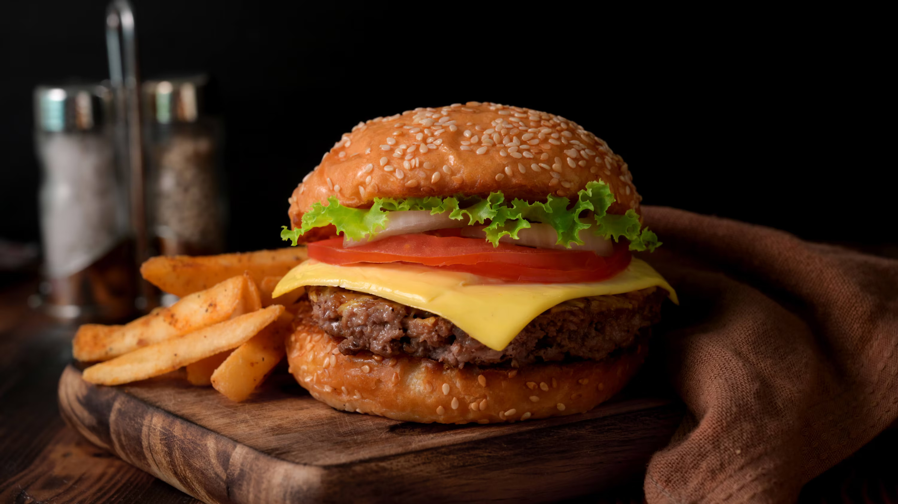

Best Hamburger Ever

Description
The best burger recipe for summertime grilling! This juice burger is jam-packed with all kinds of stuff and has no tasteless bread crumbs.
Serve on buns with your favorite condiments.
Ingredients
- Beef: These basic burgers start with one and half pounds of lean ground beef.
- Onion: A finely chopped onion takes the flavor up a notch.
- Cheese: You will need shredded colby jack or cheddar cheese.
- Egg: An egg lends moisture and helps bind the patties together.
- seasonings, herbs, and sauces: These hamburguer are flavored with an envelope of dry onion soup mix, fresh garlic, garlic powder, soy sauce, dried parsley, dried basil, dried oregano, salt and pepper.
Steps
How to Make the Best Burgers
- Combine the ingredients in a bowl
- Make four patties
- Grill the patties until the juices run clear and the meat is no longer pink in the center